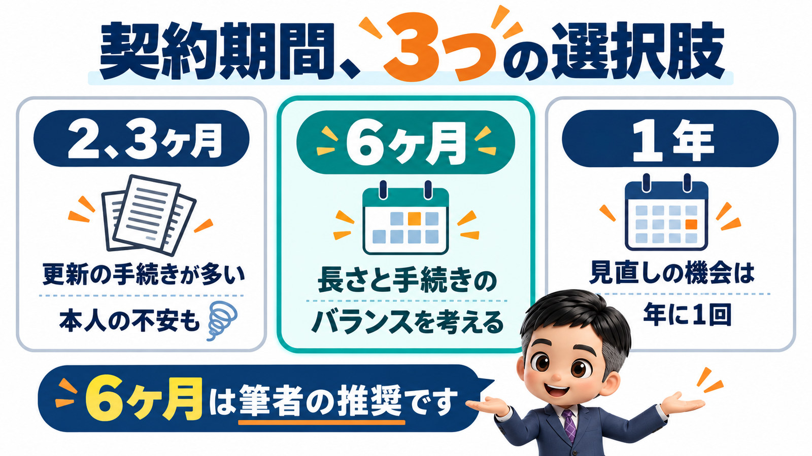
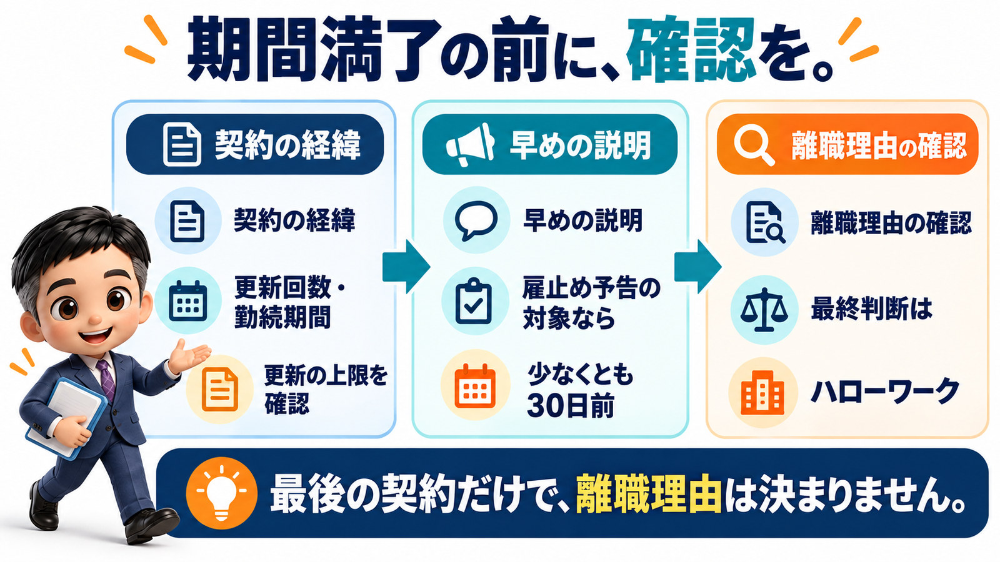

アルバイトの契約期間は、6ヶ月がちょうどいいと思います。1年では長すぎて、2、3ヶ月では短すぎるからです。
今日は、アルバイトの契約期間の話をします。
アルバイトは、いわゆる有期雇用です。
正社員と違って、契約期間があります。
その長さを、どのくらいにするのが一番いいのか。
先に結論を言っておきます。
私は、6ヶ月が一番いいと思っています。
長すぎても困るし、短すぎても困る。
その間をとると、半年ぐらいに落ち着きます。
いちばん多いのは1年で、理由は「なんとなく」です。
いろいろな会社さんの、アルバイトさんの契約期間を見聞きします。
一番多いのは、やはり1年だと感じます。
1年にしている会社さんに、なぜ1年なのかを聞いてみます。
すると、明確な答えはなかなか返ってきません。
「なんとなく、1年にしているだけです」
こういう回答が、非常に多いのです。
契約期間の長さは、あまり意識されていないのかもしれません。
でも、ここは結構重要なところです。
契約期間は、退職と結びついています。
少し嫌な話をします。
アルバイトさんとの間で期間をなぜ設けるかというと、退職が絡むから設けるのです。
契約期間の満了日に、引き続き働いてもらうのか、退職してもらうのか。
それを決めるのは、満了日のタイミングです。
だから、契約期間をどのくらいの長さにするのかは、非常に重要なポイントになります。
1年だと、判断の機会が1年に1回しか来ません。
契約期間が1年だと、続けるのか辞めるのかの判断は、1年に1回しか来ません。
たとえば、仕事が減ってきて、辞めていただきたい。
あるいは、そのアルバイトさんに問題があって、辞めていただきたい。
そういうことがあっても、判断する機会は年に1回です。
これは、ちょっと少なすぎるのではないかと思います。
2、3ヶ月だと、手続きと本人の不安が増えます。
では、もっと短く、2ヶ月や3ヶ月にしたらどうか。
それはそれで、いいです。
ただ、更新のたびに雇用契約書を交わさないといけません。
まず、事務手続きが結構大変になります。
アルバイトさんの側から見ると、2ヶ月後にどうなるか分からない状態が続きます。
「2ヶ月後も、ここで働けるんだろうか」
それはそれで、不安になる部分もあると思います。
その間をとったというわけでもないのですが、やはり半年ぐらいが一番いい。

期間満了の退職は、失業保険の扱いに関わります。
もう一つ、大きなポイントをお話しします。
契約期間の満了で退職していただく場合、雇用保険の失業保険に影響してきます。
正確には、基本手当といいます。
退職して失業保険を受けるとき、自己都合の退職なのか、会社都合の退職なのかで、大きく分かれます。
会社としては、会社都合の退職にはできるだけしたくありません。
一つは、助成金が受けられなくなることがあるからです。
もちろん、会社の評判という点でも、良くはありません。
会社都合の退職でどんどん辞めてもらう会社は、あまりいい会社だとは言えないでしょう。
満了で辞めてもらうなら、早めに伝えて、最後の契約を結びます。
契約期間の満了で辞めていただく場合、基本的には満了日の1ヶ月以上前にお伝えする必要があります。
「次の契約期間の満了で、終わりにしていただけませんか」
こういうお話を、1ヶ月以上前にします。
厚生労働省の「有期労働契約の締結、更新及び雇止めに関する基準」にも、雇止めの予告の定めがあります。
3回以上更新している場合や、1年を超えて続けて雇っている場合などは、少なくとも30日前までに予告する、という趣旨です。
有期労働契約の締結、更新及び雇止めに関する基準について(鳥取労働局)
あわせて、3年以上お勤めの方は、1ヶ月前に伝えるだけでは足りません。
最後の契約を、きちんと結ぶ必要があります。
雇用保険にも、関係する定めがあります。
有期契約の更新で3年以上続けて雇われた人が、更新されずに離職した場合は、特定受給資格者にあたる、という趣旨です。
いわゆる会社都合の扱いです。
特定受給資格者及び特定理由離職者の範囲の概要(ハローワークインターネットサービス)
3年以上お勤めの方で、最後の契約を結んでいないと、会社都合の退職になってしまいます。
最後の契約は、3年未満の方とも結んだほうがいいと思います。
むしろ、結ぶべきだと考えています。
なお、離職理由を最終的に判断するのはハローワークです。
当初の契約から更新の上限を示していたかどうかなど、それまでの経緯でも扱いが変わりえます。
迷ったら、事前に確認してください。
1年契約だと、退職まで1年以上かかります。
では、3年以上お勤めの方に、いつ伝えるのか。
答えは、最後の契約を結ぶときです。
1つの契約期間が6ヶ月なら、辞めていただきたい日の半年前の契約がそれです。
「この契約が最後です」と、雇用契約書にきちんと書いて締結します。
そこから最後の契約として半年間お勤めいただいて、ご退職という流れです。
これが1年契約だと、最後の契約を結ぶのは1年以上前になります。
1年経って、ようやく退職ということになってしまいます。
もちろん、会社都合でも構わないという判断もあります。
ただ、できるだけ避けましょうという話になるはずです。
契約期間が長ければ長いほど、このリスクは大きくなります。
世間では1年がよくありますが、私は長すぎると思います。

まとめ
アルバイトさんの契約期間は、6ヶ月が一番いいと思います。
一番多いのは1年ですが、理由は「なんとなく」がほとんどです。
契約期間は、満了日に続けるか退職するかを決める、退職と結びついたものです。
1年だと、その判断の機会が年に1回しか来ません。
2、3ヶ月だと、更新の手続きが大変になり、本人も不安になります。
期間満了の退職は、失業保険の自己都合・会社都合の扱いに関わります。
会社都合の退職は、助成金や評判の面で、会社としてはできるだけ避けたいものです。
満了で辞めていただくなら、基本的には1ヶ月以上前に伝えます。
3年以上お勤めの方とは、最後の契約をきちんと結ぶ必要があります。
6ヶ月契約なら、半年前の契約で「この契約が最後」と書けば足ります。
1年契約だと、最後の契約は1年以上前になり、退職まで1年かかります。
離職理由の判断はハローワークがするので、迷ったら事前に確認してください。
働き方をアセントさせる一歩は、雇用契約書の「1年」を、なんとなくのままにしないことだと思います。